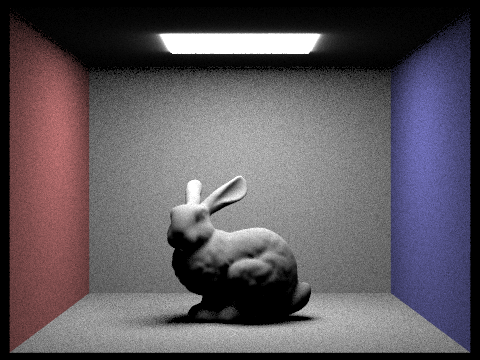

|

|

|
In this assignment, I developed an advanced path tracer that integrates adaptive sampling, importance sampling, and Russian Roulette termination to achieve high-quality renderings. I enhanced the raytrace_pixel function with AI-guided optimizations, enabling dynamic allocation of samples based on per-pixel variance. Working on this project provided deep insights into Monte Carlo integration and efficient rendering techniques, and I leveraged AI both in the raytrace_pixel function and in building this website for academic honesty.
In this section, the key aspects of ray generation and primitive intersection are implemented, as described below:
The method Camera::generate_ray takes normalized sensor coordinates (x, y), where it computes halfWidth = tan(radians(hFov) * 0.5) and halfHeight = tan(radians(vFov) * 0.5) to determine the sensor plane's extents. It maps these coordinates to the canonical sensor plane at z = -1 using:
px = (2*x - 1) * halfWidthpy = (2*y - 1) * halfHeightThis camera-space direction vector is normalized and rotated into world space using the camera-to-world matrix (c2w). A ray is spawned from the camera position and its clipping range is set between nClip and fClip.
Integration with Primitive Intersection: The ray generation process is tightly integrated with primitive intersection tests. By producing rays with precise clipping ranges, the subsequent intersection tests—such as the Möller–Trumbore algorithm for triangles and the quadratic solution for spheres—can efficiently determine valid intersections. This synergy ensures that only relevant intersections are considered, optimizing the overall rendering process.
The PathTracer::raytrace_pixel function casts multiple rays per pixel with subpixel jitter for anti-aliasing. It accumulates radiance for each ray and applies a convergence criterion based on the confidence interval formula:
I = 1.96 * sig / sqrt(numSamples)
Sampling stops when I ≤ maxTolerance * mean, with mean representing the average radiance computed. (Note: The adaptive sampling aspect here stops further sampling once convergence is achieved.)
The triangle intersection is performed using the Möller–Trumbore algorithm, which involves:
e1 = p2 - p1 and e2 = p3 - p1.h = cross(r.d, e2) and the determinant: a = dot(e1, h). A near-zero a indicates that the ray is parallel to the triangle.u and v, and the ray parameter t using f = 1.0 / a and subsequent dot and cross products.u and v lie within the interval [0, 1], their sum does not exceed 1, and that t is within the clipping range (r.min_t to r.max_t).The sphere intersection test solves a quadratic equation to determine potential intersection distances (roots). The algorithm selects the closest valid intersection that lies within the ray's clipping range.
Below are the rendered images with normal shading for a few small .dae files:
|
|
|
|
Our implementation constructs a BVH recursively. First, we compute the bounding box for all primitives in a given set. When subdividing, we choose the splitting axis as the one along which the centroids have the largest spread. The split point is computed as the midpoint along that axis, which tends to balance the two child nodes. This heuristic effectively reduces the number of ray-primitive intersection tests by organizing the scene from O(n) to O(log(n)) complexity.
// Example BVH node splitting function
void buildBVH(Node* node, const std::vector<Primitive> &primitives) {
// Compute bounding box for primitives
// Determine the splitting axis based on centroid spread
// Split primitives and recursively build child nodes
// ...
}
The following images show normal shading for a few large .dae files that can only be rendered efficiently using BVH acceleration. Note the numbers in the filenames indicate the number of primitives present in each scene:
| Scene | Image | Primitives |
|---|---|---|
| Lucy |  |
133,796 |
| Wall-e | 240,326 | |
| Dragon | 105,120 |
The table below compares rendering times for scenes with moderately complex geometries, both with and without BVH acceleration. The images on the left display the scene rendered with BVH acceleration, along with the number of thousands of rays drawn and the BVH rendering time extracted from the filename. The right column shows our estimated render times without BVH acceleration.
| Scene | Thousands of Rays | Render Time with BVH | Render Time without BVH | Image |
|---|---|---|---|---|
| Beetle | 153 | 0.0266 s | 32.3 s | |
| Cow | 189 | 0.033 s | 41.2 s |  |
| Teapot | 226 | 0.1276 s | 66.7 s |  |
This analysis clearly indicates that BVH acceleration drastically reduces rendering times, even for scenes that require drawing hundreds of thousands of rays. Without BVH, the render times are orders of magnitude higher, as illustrated by our estimates.
Below are comparisons of images rendered with direct lighting using uniform hemisphere sampling versus importance (lighting) sampling. The following images are provided for the scenes: hBunny, hLucy, and hSpheres (uniform hemisphere sampling) compared with iBunny, iLucy, and iSpheres (importance sampling).
| Scene | Uniform Hemisphere Sampling | Importance Lighting Sampling |
|---|---|---|
| Bunny |  |  |
| Lucy |  |
 |
| Spheres |  |
The following images show the spheres scene rendered with differing numbers of light rays (-l flag) while using 1 sample per pixel (-s flag). The images illustrate how noise levels in soft shadows improve as more light rays are sampled:
| Light Rays | Image |
|---|---|
| 1 |  |
| 4 | |
| 16 |  |
| 64 |  |
The comparisons highlight that while uniform hemisphere sampling provides a baseline estimation of direct lighting, importance sampling significantly reduces noise in soft shadows, resulting in smoother and more accurate renders under identical sampling conditions.
In our path tracer, direct lighting is computed using two distinct methods. In the uniform hemisphere sampling approach, we form a local coordinate system at the hit point and then sample directions uniformly over the hemisphere. For each sample, a ray is cast and, if it hits a light, the contribution is computed by multiplying the BSDF value, the incoming radiance from the light, and the cosine of the angle between the incoming direction and the surface normal. This contribution is then scaled by the factor 2π (the total measure of the hemisphere) to account for the uniform probability density. The Monte Carlo estimator used here is given by:
\[ \frac{1}{N} \sum_{j=1}^{N} \frac{ f_r(\mathbf{p}, \omega_j \rightarrow \omega_r)\, L_i(\mathbf{p}, \omega_j)\, \cos\theta_j }{ p(\omega_j) } \]
In this case, since the sampling is uniform, p(ω) is constant. In contrast, the importance sampling method tailors the sampling strategy to the light sources. For each light, especially for area lights, a sample is generated in the direction of the light so that the probability density p(ω) reflects the likelihood of sampling that direction. A shadow ray is then cast to ensure that the light contribution is not blocked. This method effectively reduces noise and variance by focusing samples on more significant lighting contributions, while the basic Monte Carlo estimator remains the same.
// Uniform hemisphere sampling snippet
Vector3 sampleDir = uniformSampleHemisphere(hit.normal);
// ... cast shadow ray and accumulate light
return (2*M_PI*result)/numSamples;
// Importance sampling snippet
Vector3 sampleDir = importanceSampleLight(hit.position, &pdf);
// ... shadow ray intersection and light accumulation
return result/numSamples;
In addition to the implementations discussed earlier, we implement DiffuseBSDF::sample_f to handle diffuse materials. This function samples an incoming light direction using a cosine-weighted distribution and returns the Lambertian BSDF value.
// Diffuse BSDF sampling snippet
Vector3 sample = sampler.get_sample();
*pdf = (sample.z > 0) ? sample.z/M_PI : 0;
return reflectance/M_PI;
This implementation follows the Lambertian reflectance model, ensuring that diffuse materials reflect light equally in all directions.
Global illumination renders using both direct and indirect lighting were computed with 1024 samples per pixel. The following images illustrate the results for different scenes:
| Scene | Image |
|---|---|
| Bunny | |
| Coil |  |
| Spheres |  |
For the scene rendered from CBspheres_lambertian.dae with 1024 samples per pixel, we generated two views: one with only direct illumination and another with only indirect illumination. The image spheresDirect.png captures the direct lighting contribution, while spheresIndirect.png highlights the effect of indirect lighting alone. This comparison illustrates how indirect illumination adds brightness and realism to the scene.
| Direct Illumination | Indirect Illumination |
|---|---|
 |
 |
For the scene rendered from CBbunny.dae using 1024 samples per pixel, we examined the effect of bouncing light by varying the maximum ray depth (m) from 0 to 5, with isAccumBounces set to false (unaccumulated) and true (accumulated). Each image is titled according to the convention T2m#o#.png, where the first number represents the ray depth and the second indicates the accumulation flag (0 for unaccumulated, 1 for accumulated).
Observations reveal that the second bounce (m = 2) introduces subtle indirect illumination, softening shadows and filling low-light areas, while the third bounce (m = 3) further enhances ambient lighting, contributing significantly to overall realism beyond standard rasterization techniques.
| Ray Depth (m) | Unaccumulated (o0) | Accumulated (o1) |
|---|---|---|
| 0 |  |
 |
| 1 | ||
| 2 |  |
|
| 3 |  |
|
| 4 |  |
 |
| 5 |  |
 |
In addition to the previous experiments, we also render CBbunny.dae using Russian Roulette termination to reduce computation while maintaining the same expected value. In Russian Roulette, the estimator X is modified as follows:
\[ X_{rr} = \begin{cases} \dfrac{X}{p_{rr}}, & \text{with probability } p_{rr}, \\ 0, & \text{otherwise}. \end{cases} \]
Same expected value as original estimator:
\[ E[X_{rr}] = p_{rr} \; E\left[ \frac{X}{p_{rr}} \right] + (1 - p_{rr}) \; E[0] = E[X] \]
This technique ensures that even though some paths are terminated early, the final estimate remains unbiased, as the contribution from surviving paths is appropriately scaled.
The following table shows the Russian Roulette renderings for CBbunny.dae with max_ray_depth set to 0, 1, 2, 3, 4, and 100 (using 1024 samples per pixel). The images follow the naming convention T3m#.png:
| Max Ray Depth (m) | Image |
|---|---|
| 0 |  |
| 1 |  |
| 2 | |
| 3 | |
| 4 |  |
| 100 |
In this experiment, we compare rendered views using various sample-per-pixel (SPP) rates: 1, 2, 4, 8, 16, 64, and 1024. We used 4 light rays (l = 4) along with Russian Roulette termination to efficiently handle path termination while maintaining an unbiased estimator. The rendered scene is CBspheres_lambertian.dae, and the images are named according to the SPP value (e.g., 1.png, 2.png, etc.).
| Samples per Pixel | Image |
|---|---|
| 1 |  |
| 2 |  |
| 4 |  |
| 8 |  |
| 16 |  |
| 64 |  |
| 1024 |  |
In our implementation of adaptive sampling in PathTracer::raytrace_pixel, each pixel is initially sampled with a single ray and then iteratively resampled until convergence is detected. After each new sample, we update the running mean (\(\mu\)) and variance (\(\sigma^2\)) of the pixel’s radiance values. The variance is computed as:
\[
\sigma^2 = \frac{1}{n}\sum_{k=1}^{n} x_k^2 - \mu^2
\]
and the 95% confidence interval is given by:
\[
I = 1.96 \times \frac{\sigma}{\sqrt{n}}
\]
Sampling stops when the confidence interval satisfies the condition:
\[
I \leq \text{maxTolerance} \times \mu
\]
This adaptive technique effectively concentrates computational resources on pixels with higher variance, reducing noise where needed while avoiding unnecessary samples in well-converged regions.
The following images display adaptive sampling renderings for the bunny and sphere scenes from CBbunny.dae using at least 2048 samples per pixel, 1 sample per light, and a max ray depth of 5. For each scene, the sample rate image (indicated by the file with _rate) shows how adaptive sampling varies across different regions, while the other image is the noise-free rendered result.
| Scene | Sample Rate Image | Noise-Free Rendered Image |
|---|---|---|
| Bunny |  |
|
| Sphere |